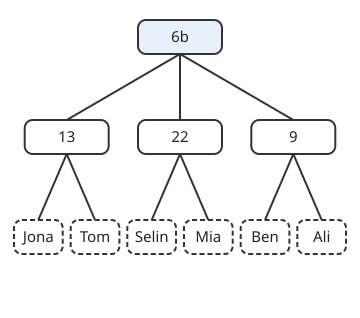
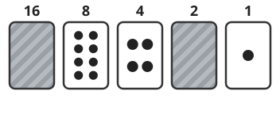
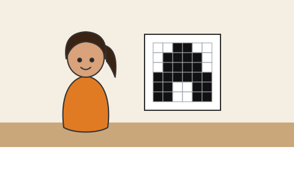
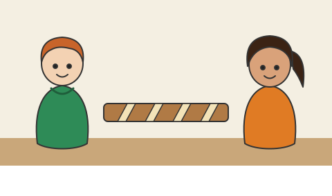

Medienübersicht
Alle Bilder, Audios und Videos dieser App mit ihrer Quelle und ihrer Lizenz.
Bilder

images/szene-zettel.svg© CC-BY-4.0Verwendet auf: Information und Daten

images/zettel.svg© CC-BY-4.0Verwendet auf: Information und Daten

images/abstimmung.svg© CC-BY-4.0Verwendet auf: Tabelle, Diagramm, Text

images/baum-zimmer.svg© CC-BY-4.0Verwendet auf: Der Baum

images/turnier.svg© CC-BY-4.0Verwendet auf: Der Baum

images/szene-ampel.svg© CC-BY-4.0Verwendet auf: Codes im Alltag

images/bit-karten-13.svg© CC-BY-4.0Verwendet auf: Die Bit-Karten

images/bit-karten-22.svg© CC-BY-4.0Verwendet auf: Die Bit-Karten

images/byte-karten.svg© CC-BY-4.0Verwendet auf: Bit und Byte

images/szene-logo.svg© CC-BY-4.0Verwendet auf: Bilder aus Pixeln

images/zelt-pixel.svg© CC-BY-4.0Verwendet auf: Bilder aus Pixeln

images/vergroessern.svg© CC-BY-4.0Verwendet auf: Pixel oder Vektor?

images/szene-geheim.svg© CC-BY-4.0Verwendet auf: Die Geheimschrift

images/skytale.svg© CC-BY-4.0Verwendet auf: Die Geheimschrift